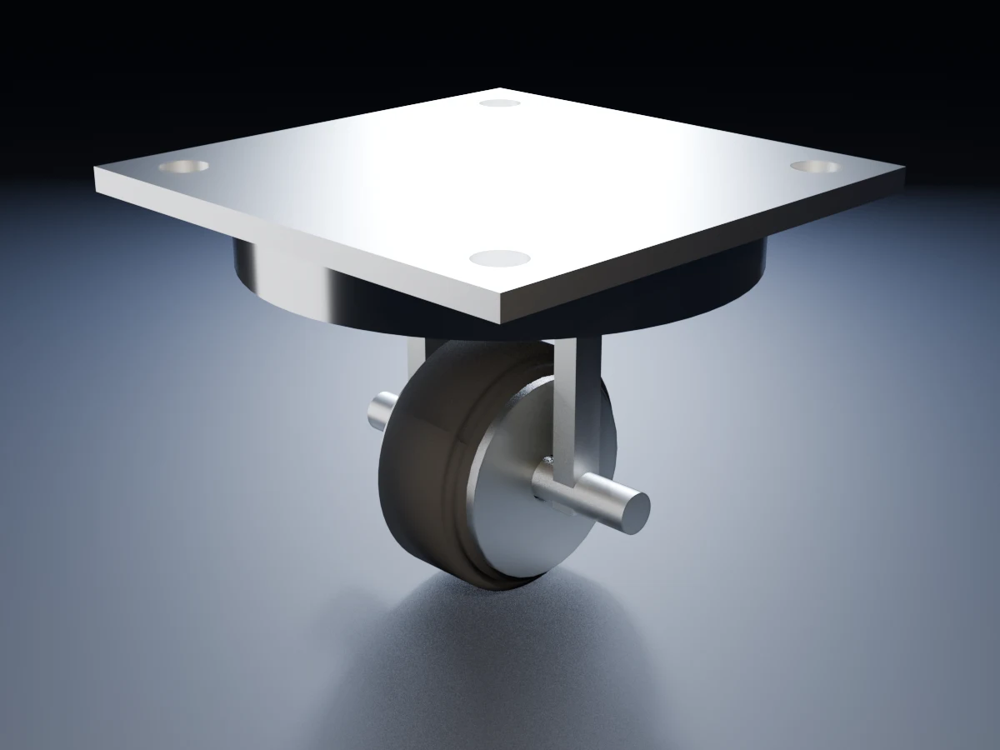

- TYPE
- Commercial commission
- TOOLS
- Blender
- DELIVERABLES
- Animation · Exploded views · Marketing assets
- YEAR
- 2026
The problem: the product's biggest selling point can't be photographed
The client is a smart suitcase brand (unnamed under NDA). The product's competitive edge lives inside it: a collapsible wheel mechanism and a built-in vacuum compression system. These are exactly where product photography fails — a camera can shoot the shell, but not how the mechanism moves, how the air gets pulled out, how parts engage.
For a product that needs to convince strangers fast on crowdfunding pages and social ads, "can't explain the internals" translates directly into lost conversions.
The approach: rebuild the entire product in Blender, then take it apart
1. Mechanism-grade modeling
Reverse-built from the physical sample: the full wheel assembly (forks, bearing seats, folding linkages), the vacuum pump module, and the case structure as separate parts. The priority isn't polygon counts — it's that every pivot point and range of motion matches the real hardware, so the mechanism animation later doesn't break.
2. Mechanism animation
Short animations of the wheel folding sequence and the vacuum compression cycle. Consumers don't need to understand machinery; seeing the wheels click into the body and clothing sink as air is drawn out delivers the selling point completely.
3. Exploded views
The full case blown apart along its axis — one image answering "why is this worth the price": part count, materials, and structural complexity at a glance. Used across e-commerce pages, spec sheets, and decks.
See it in practice: a caster wheel assembly
The caster wheel below was built the same way: mounting plate, outer and inner bearing races, 12 steel balls, fork, axle, hub and tire. That is 21 parts, each placed where it actually sits in the assembly. Drag to turn it around, or watch it come apart and go back together.

- PARTS
- 21
- VERTICES
- 3,000
- TRIANGLES
- 5,944
- MATERIALS
- 5
Deliverables and reusability
- Mechanism animations (social ads, crowdfunding pages)
- Static exploded-view visuals (e-commerce, presentations)
- Product hero renders (multiple angles, materials, scenes)
- 3D source files included — recolors and new angles never start from zero again
The biggest difference between 3D assets and photography is reuse: once the model exists, recoloring, new backgrounds, new formats, and new animations carry near-zero marginal cost. Model once; the entire product life cycle's visuals flow from a single source.
Who this fits
Hardware with complex mechanisms and internal selling points: luggage, appliances, tools, fitness equipment, smart devices. Especially teams heading into crowdfunding who need strangers to "get why it's good" in seconds.
Have a product that needs to be understood?
Send product materials and requirements — evaluation and quote within 1–2 business days.
kevin@wake.com.tw →